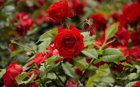
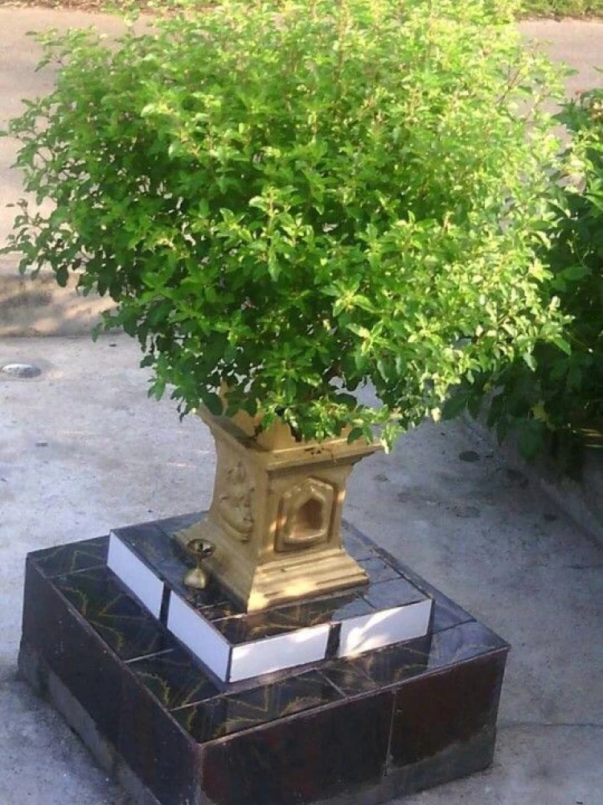

Name |
Type |
Uses |
Region |
Photo |
| Rose |
Flowering |
Decoration |
Cold climate |
 |
| Rosewood |
Tree |
Furniture, Musical Instruments |
Tropical |
|
| Banana |
Fruit |
Food, Smoothies |
Tropical, Subtropical Regions |
 |
| Sandalwood |
Tree |
Fragrance, Cosmetics |
India, Southeast Asia |
|
| Neem |
Tree |
Medicinal, Pesticide |
Indian Subcontinent |
|
| Tulasi (Holy Basil) |
Herb |
Medicinal, Religious |
India |
 |
| Mango |
Fruit |
Food, Juices |
Tropical Regions |
|
| Teak |
Tree |
Shipbuilding, Outdoor Furniture |
Southeast Asia |
|
| Lavender |
Herb |
Fragrance, Landscaping |
Mediterranean |
 |
| Cedarwood |
Tree |
Aromatic Oils, Construction |
Mediterranean, Himalayas |
|
| Spinach |
Vegetable |
Salads, Cooking |
Worldwide |
|
| Bamboo |
Grass |
Indoor Decor, Fencing |
Asia, South America |
|
| Mahogany |
Tree |
Furniture, Cabinetry |
Tropical America |
|
| Brahmi |
Herb |
Brain Health, Cognitive Support |
India, Australia |
|
| Tomato |
Vegetable (Fruit Botanically) |
Cooking, Salads |
Worldwide |
 |
| Pipal (Sacred Fig) |
Tree |
Religious, Medicinal |
India, Nepal |
 |
| Banyan |
Tree |
Shade, Medicinal |
India |
 |
| Carrot |
Vegetable |
Cooking, Salads |
Worldwide |
|
| Apple |
Fruit |
Food, Juices |
Temperate Regions |
 |
| Orchid |
Flowering |
Ornamental, Indoor Decoration |
Tropical Regions |
 |
| Agarwood |
Tree |
Perfume, Incense |
Southeast Asia |
 |